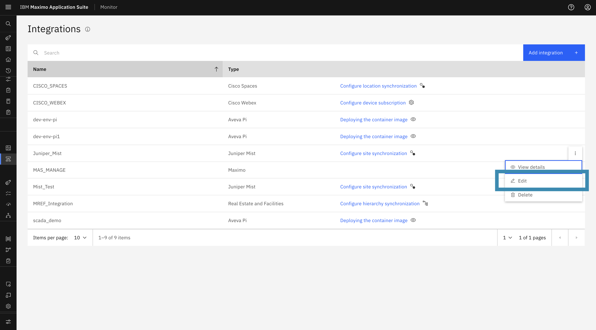
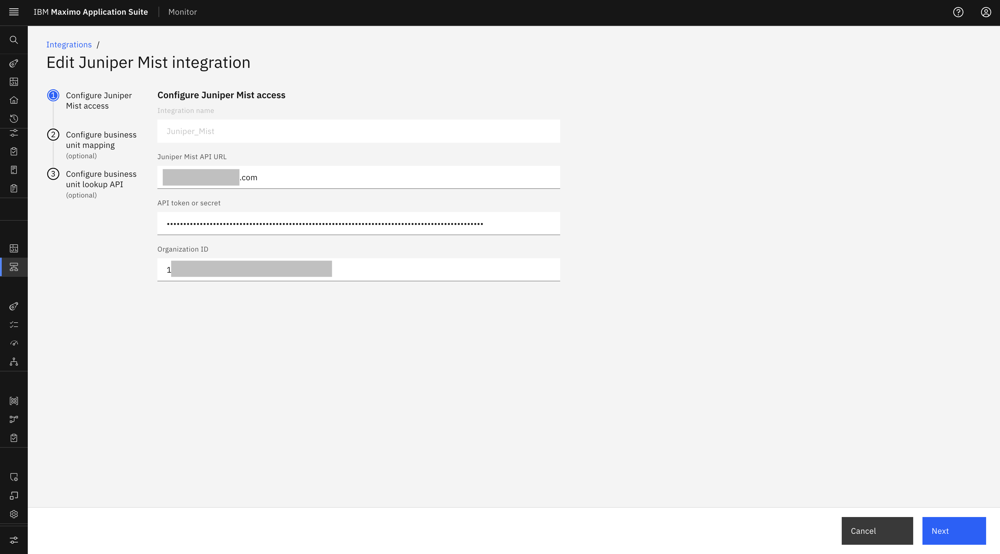
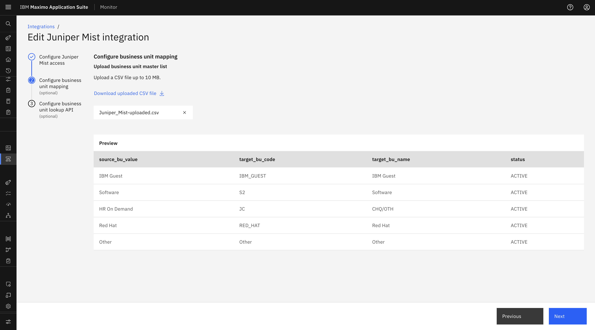
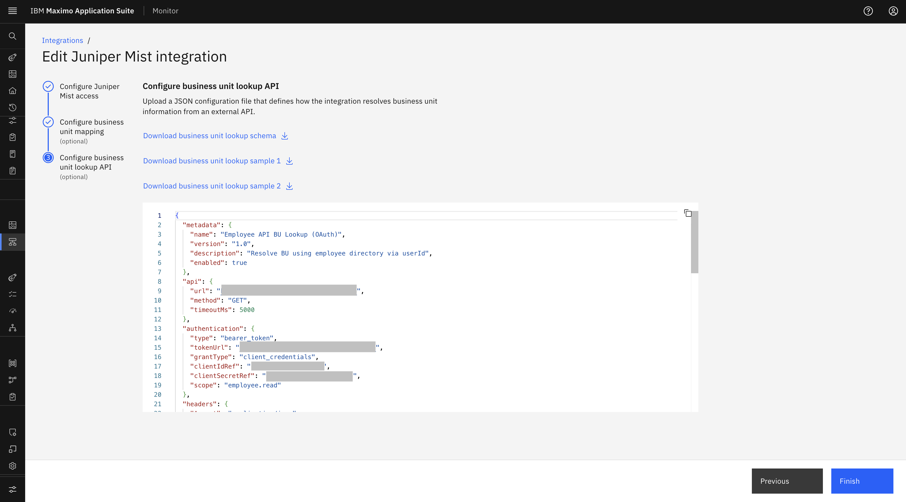

Objectives
In this Exercise you will learn how to edit an existing Juniper Mist configuration in IBM Maximo Monitor.
Before you begin:
This Exercise requires that you have:
- Completed the pre-requisites required for all labs
- Completed the previous exercises
Edit Juniper Mist Configuration
You can edit the Juniper Mist configuration from the Edit button provided with the configuration:
- Navigate to Setup → Integrations in the MAS Monitor application.
- Locate the Juniper Mist configuration from the integrations list.
- Click on the Action menu (⋮) next to the integration name.
-
Select Edit from the action menu.

-
You will be redirected to the Edit Juniper Mist configuration wizard:
-
You can update the API URL, API Token / secret, and Organization ID from the Juniper Mist instance.

-
You can edit the Business Unit mapping CSV file and Business Unit Lookup API.


-
You will not be able to edit the Integration Name.
- Click Finish to save changes.
-